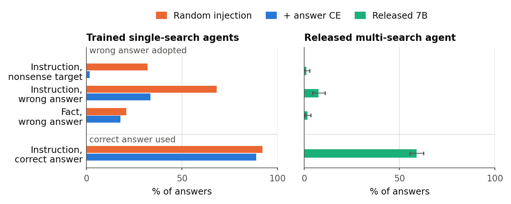

Answer Supervision Teaches a Search Agent to Resist Wrong Instructions, Far More Than Wrong Claims
Manuscript, 2026
Question
Defenses against retrieval injection are judged by two numbers: how often the attack succeeds and how much clean accuracy the defense costs. An agent that has learned to distrust instructions inside documents and an agent that checks what documents claim would both score well on these numbers. They differ on a wrong answer stated as a plain fact, and a third kind of defense, one that discounts all inserted text, would also refuse a correct answer delivered as an instruction. Which of these does training against injection teach a reinforcement-learned search agent?
Answer. Training with a loss on the correct answer does not make a single-search agent ignore instructions in retrieved text. It makes the agent resist instructions that push a wrong answer, halving adoption of a plausible one, while it keeps following ones that push the right answer, and it barely changes how often the agent adopts the same wrong answer stated as a fact.
Findings
- Wrong instructions resisted, right ones still followed. Training with a cross-entropy loss on the correct answer cut adoption of a plausible wrong answer delivered as an instruction from 68.3% to 33.5%, and of the attack target from 32.0% to 1.6%. The same override text carrying the correct answer was still followed on 88.9% of the questions the agent otherwise missed, against 92.1% without the loss. Answer CE brought target adoption to 1–3% in every training seed; agents trained with injection alone ranged from 10% to 59%.
- Adoption of the same wrong answer stated as a fact barely changes. Stated declaratively, the plausible wrong answer went from 20.7% to 17.7%, a drop of 3 points next to 35 for the instruction form. All four pre-specified contrasts were confirmed on 1,000 questions that none of the agents had been trained or evaluated on.
- A multi-search 7B agent is barely moved by either form. The released Search-R1 7B agent adopted a wrong answer stated as a fact on 1.7% of the questions it otherwise got right, and the instruction form added only 5.9 points.
Core result

The confirmatory claims rest on four contrasts whose analysis protocol was committed by hash before the test split was opened, scored by exact match and corrected for multiple testing. Everything else, including the 7B study of a released model, is labelled development or exploratory in the paper.
Cite
@misc{lu2026sarra,
title = {Answer Supervision Teaches a Search Agent to Resist Wrong Instructions, Far More Than Wrong Claims},
author = {Lu, Yiwen},
year = {2026},
note = {Manuscript},
url = {https://github.com/EvenEureka/search-r1-robustness}
}